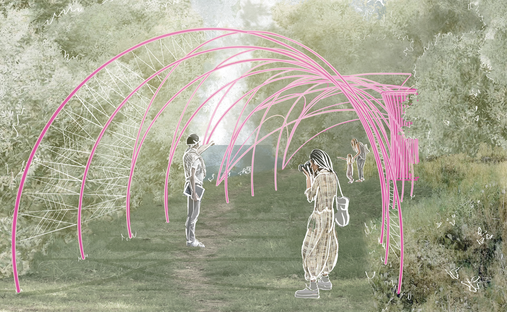
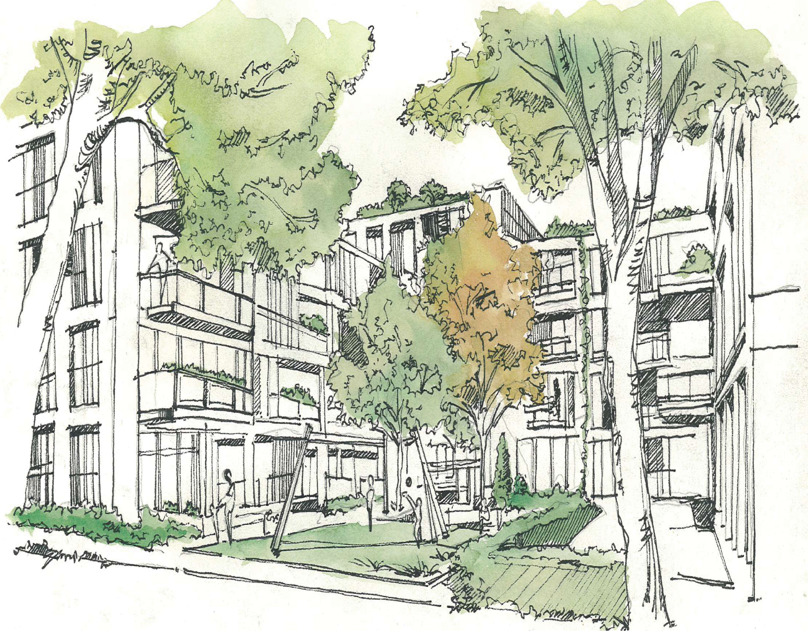
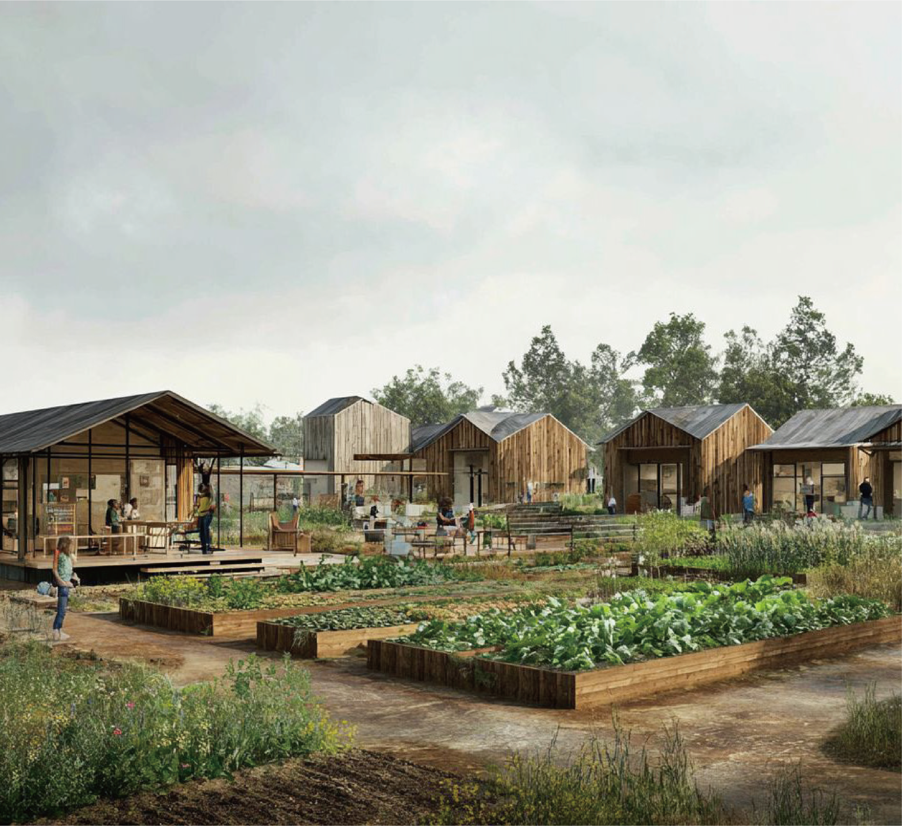

01 Open ↗Campus Acupuncture
Participation · Temporal activation · Freising
2026
Selected works
2024—2026
Robert Wu develops landscape strategies that connect ecology, climate adaptation and social life across urban and territorial scales.

Academic and professional work in ecological urbanism, landscape infrastructure and research by design.

01 Open ↗Participation · Temporal activation · Freising
2026

02 Open ↗Forest urbanism · Housing landscape · Munich
2025

03 Open ↗Productive landscape · Green technology
2025
 04
Open ↗
04
Open ↗
Habitat restoration · Landscape planning · Taiwan
2022
Robert Wu is a Master’s student in Landscape Architecture at the Technical University of Munich. Before joining TUM, he worked as a Project Assistant at Fu Jen Catholic University in Taiwan, contributing to ecological restoration, landscape planning and sustainable environment projects.
M.A. Landscape Architecture
Technical University of Munich
B.A. Landscape Architecture
Fu Jen Catholic University
Ecological urbanism
Climate adaptation
Landscape infrastructure
Rhino · GIS
Adobe Creative Suite
AutoCAD
Design research
Chinese
English
German